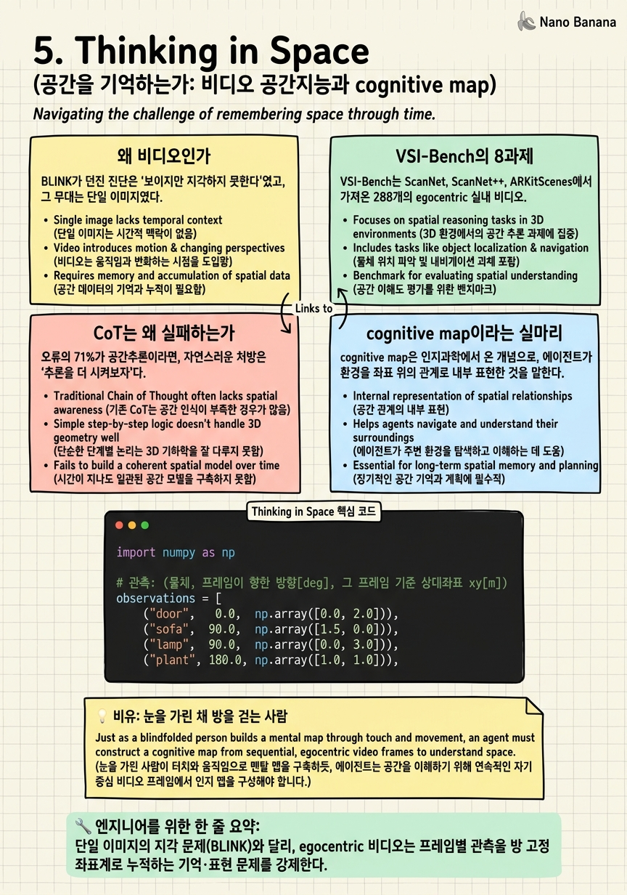

Thinking in Space
방을 한 바퀴 도는 walkthrough 비디오를 보여준 뒤 카메라를 끄고 묻는다. 소파에서 냉장고는 어느 쪽이었지? 모델은 그 영상을 다 봤지만, 과연 방을 머릿속에 다시 세우고 그것을 기억하는가?

🎯 학습 목표
- 정지 이미지 진단(BLINK)과 비디오 기억 문제의 질적 차이를 구분하고, 왜 비디오가 egocentric↔allocentric 변환을 강제하는지 설명한다.
- VSI-Bench의 3유형 8과제 구조와 human-vs-model gap 수치를 정확히 읽고, Object Size 같은 measurement 과제가 왜 가장 취약한지 진단한다.
- CoT·self-consistency·tree-of-thoughts가 공간추론에서 실패하는 이유를, '언어적 탐색 대상이 되는 공간 표현 자체가 없다'는 표현 문제로 설명한다.
- locally-consistent / globally-inconsistent cognitive map 개념을 이해하고, frame-to-global 2D rotation 변환이 왜 병목인지 코드로 재현한다.
Chapter 4까지의 진화는 하나의 정지 이미지 안에서 depth를 어떻게 읽고 질의할 것인가에 머물러 있었다. SpatialBot이 depth를 도구로 호출할 수 있게 되었어도, 입력은 여전히 한 장의 프레임이었다. 그런데 실제 embodied 상황에서 공간이란 한 장의 사진이 아니라, 에이전트가 방을 돌아다니며 시간에 걸쳐 축적하는 관측의 흐름이다. 문제가 정지 지각에서 비디오 기억으로 옮겨가는 순간, 벤치마크가 측정하는 능력의 성질도 바뀐다.
Thinking in Space (Jihan Yang 외, NYU·Yale·Stanford, CVPR 2025)는 이 전환을 정면으로 겨냥한다. 저자들은 288개의 egocentric 실내 walkthrough 비디오 위에 5,000개 이상의 QA를 얹은 VSI-Bench를 만들고, 최전선 모델들에게 '영상을 본 뒤 그 방을 얼마나 기억하고 추론하는가'를 묻는다. 결과는 냉정하다. 가장 강한 Gemini-1.5 Pro도 45.4%에 그치고, 인간 79.2%와는 33.8pt의 간극이 벌어진다.
이 챕터의 진짜 발견은 점수 자체가 아니라 무엇이 그 점수를 못 올리느냐에 있다. 언어모델의 표준 추론 도구인 CoT, self-consistency, tree-of-thoughts가 이 벤치에서는 도움이 되지 않고 일부는 오히려 성능을 떨어뜨린다. 대신 모델에게 명시적 cognitive map을 그리게 하면 공간 거리 추론이 개선된다. 언어적 추론과 공간적 추론은 같은 것이 아니라는 코스의 중심 명제가, 여기서 처음으로 실험적 부정 결과의 형태로 못 박힌다.
핵심 내용
왜 비디오인가
BLINK가 던진 진단은 '보이지만 지각하지 못한다'였고, 그 무대는 단일 이미지였다. 한 장의 사진에서 두 물체의 상대 깊이를 못 맞히는 것은 지각의 실패다. 그러나 방을 걸어 다니는 비디오로 무대를 옮기면, 실패의 성질이 달라진다. 이제 모델은 각 프레임을 지각하는 것을 넘어, 서로 다른 시점에서 본 조각들을 하나의 일관된 방으로 꿰매고 그것을 유지해야 한다.
핵심은 egocentric video가 reference-frame 변환을 구조적으로 강제한다는 데 있다. 프레임 \(t\)에서 '내 왼쪽에 소파'라는 관측은 카메라 좌표계, 즉 egocentric frame의 진술이다. 카메라가 90도 돌아간 프레임 \(t'\)에서 같은 소파는 '내 앞'이 된다. 방 자체를 기준으로 한 allocentric frame에서 소파의 위치는 변하지 않았는데도 말이다. 방을 '기억'한다는 것은 시시각각 변하는 egocentric 관측을 방 고정 좌표계로 변환해 누적한다는 뜻이다.
이것이 survey가 지목한 세 번째 구조적 격차, reference-frame instability가 가장 날것으로 드러나는 지점이다. 정지 이미지에서는 egocentric과 allocentric이 대체로 겹쳐 이 변환을 회피할 수 있었다. 비디오는 그 회피를 허용하지 않는다. 카메라가 움직이는 순간, 프레임마다 좌표계가 회전하고, 모델은 그 회전을 되돌려 누적하지 않으면 방을 재구성할 수 없다.
그래서 '왜 비디오인가'라는 질문의 답은 난이도가 아니라 진단의 정밀도다. 비디오는 지각 능력과 공간 기억 능력을 분리해 측정할 수 있게 해준다. 프레임 하나하나는 잘 지각하면서도 방 전체의 구조를 못 세우는 모델이 있다면, 그 실패는 perception이 아니라 spatial representation의 실패다. VSI-Bench는 바로 이 분리를 겨냥해 설계되었다.

VSI-Bench의 8과제
VSI-Bench는 ScanNet, ScanNet++, ARKitScenes에서 가져온 288개의 egocentric 실내 비디오 위에 5,000개 이상의 QA를 구성한다. 과제는 성격이 다른 세 유형으로 묶인 8개로 나뉜다. configurational은 물체들의 배치·상대 위치·경로를 묻고, measurement estimation은 거리·크기·개수 같은 metric 양을 묻고, spatiotemporal은 시간에 걸친 등장 순서 같은 것을 묻는다.
이 세 유형은 우연이 아니라 앞서 말한 능력 분리를 반영한다. measurement estimation은 metric 감각을, configurational은 allocentric 재구성을, spatiotemporal은 시간축 위의 기억을 각각 겨냥한다. 어느 축에서 무너지는지를 보면 모델의 결함이 지각인지 표현인지 기억인지 짚을 수 있다.
| 유형 | 대표 과제 | 무엇을 측정하나 | 특기할 gap |
|---|---|---|---|
| Configurational | relative direction, route plan, appearance order 등 | allocentric 방 재구성 | 전반적으로 낮음 |
| Measurement estimation | object size, object count, absolute/relative distance | metric 양 추정 | Object Size가 최악 |
| Spatiotemporal | 시간 순서·등장 순서 | 시간축 위의 공간 기억 | 취약 |
숫자가 그림을 확정한다. 전체 성능에서 최고 모델 Gemini-1.5 Pro가 45.4%, GPT-4o가 34.0%인 반면 인간은 79.2%로, 최고 모델과도 33.8pt가 벌어진다. 가장 극적인 균열은 Object Size다. 여기서 Gemini-1.5 Pro는 30.9%에 그치는데 인간은 94.3%를 낸다. 물체가 얼마나 큰지를 대는 일, 즉 metric 감각이 모델에게 거의 무너져 있다는 신호다.
결정적으로, 저자들이 오류를 분해하니 약 71%가 spatial-reasoning error였다. egocentric↔allocentric 변환 실패와 relational reasoning 실패가 그 대부분이다. 지각 오류도 언어 이해 오류도 아니다. 병목은 방을 좌표계 위에 올려 관계를 따지는 공간추론 그 자체다. 이 오류 분해가 다음 절의 부정 결과로 곧장 이어진다.

CoT는 왜 실패하는가
오류의 71%가 공간추론이라면, 자연스러운 처방은 '추론을 더 시켜보자'다. 언어모델 세계에서 추론을 키우는 표준 도구는 세 가지다. chain-of-thought로 단계를 풀어 쓰게 하고, self-consistency로 여러 추론을 표결하고, tree-of-thoughts로 탐색을 넓힌다. VSI-Bench는 이 세 도구를 모두 붙여 본다.
결과는 코스 전체에서 가장 값진 부정 결과다. 세 기법 모두 공간 과제 성능을 유의미하게 올리지 못하고, 일부는 오히려 성능을 떨어뜨린다. 반면 모델에게 명시적 cognitive map을 그리게 하는 개입만이 공간 거리 능력을 실제로 끌어올린다.
| 개입 | 성격 | VSI-Bench에서의 효과 |
|---|---|---|
| Chain-of-Thought | 언어적 단계 서술 | ≈0 또는 음(-) |
| Self-Consistency | 다중 추론 표결 | ≈0 또는 음(-) |
| Tree-of-Thoughts | 언어적 탐색 확장 | ≈0 또는 음(-) |
| Cognitive Map prompting | 명시적 공간 표현 구성 | 양(+), 거리 추론 개선 |
왜 실패하는가. CoT·SC·ToT는 모두 언어 토큰 위에서의 탐색이다. 이들은 이미 존재하는 추론 경로를 넓히거나 표결할 뿐, 탐색이 딛고 설 공간 표현 자체를 만들어 주지는 못한다. 모델이 방의 배치를 애초에 표현하지 못한다면, 그 위에서 아무리 언어적으로 길게 생각해도 없는 지도 위를 헤맬 뿐이다. tree-of-thoughts가 넓히는 것은 문장의 가지이지 방의 좌표가 아니다.
이것이 코스의 중심 명제가 실험으로 굳는 지점이다. 언어적 추론 ≠ 공간적 추론. 정확히는, 언어적 추론은 표현된 공간 위에서만 작동하는 2차 연산이다. 표현이 비어 있으면 추론은 공회전한다. cognitive map이 도움이 된 이유도 대칭적이다. 그것은 추론을 더 시키는 개입이 아니라, 추론이 딛고 설 공간 표현을 만들어 주는 개입이기 때문이다. 처방은 더 많은 CoT가 아니라 더 나은 representation이다.

cognitive map이라는 실마리
cognitive map은 인지과학에서 온 개념으로, 에이전트가 환경을 좌표 위의 관계로 내부 표현한 것을 말한다. VSI-Bench의 실마리는, 모델에게 이 지도를 명시적으로 그리게 하면 공간추론이 개선된다는 것이었다. 그렇다면 모델은 애초에 그런 지도를 형성하고 있기는 한가.
저자들의 probing이 미묘한 답을 준다. 모델은 비디오로부터 국소적으로 metric한 mental map을 실제로 형성한다. 가까이 있는 물체들 사이의 상대 위치는 그럴듯하게 잡는다. 그러나 이 지도는 locally-consistent하되 globally-inconsistent하다. 이웃한 조각들끼리는 아귀가 맞는데, 멀리 떨어진 조각들을 하나의 전역 좌표계로 이으면 어긋난다.
이것이 왜 자연스러운 실패인지는 앞 절의 reference-frame 문제로 설명된다. 각 프레임에서의 국소 관측을 전역 지도로 잇는 유일한 방법은, 프레임마다의 카메라 회전을 되돌려 누적하는 것이다. 회전 추정에 작은 오차가 있으면 그것이 프레임을 따라 누적되어, 국소적으로는 멀쩡하지만 전역적으로는 드리프트가 쌓인 지도가 된다. 창발했으나 파편화된 공간 기억, 이것이 현 세대 모델이 방을 기억하는 방식이다.
실마리의 의미는 방향에 있다. VSI-Bench는 문제를 '언어 추론 부족'에서 '공간 표현 부족'으로 재정의했고, cognitive map을 그 표현의 최소 형태로 제시했다. 다음 챕터들은 이 실마리를 각자의 방식으로 확장한다. 능력의 지도를 taxonomy로 넓히고(ch6), perspective-taking을 mental simulation으로 정면돌파하고(ch7), depth를 언어 안으로 들여(ch8), 끝내 단일 VLM이 장면을 재구성하며 추론하는 데(ch10) 이른다. 그 모든 갈래의 출발점이 여기, 파편화된 지도를 어떻게 전역적으로 일관되게 만들 것인가라는 물음이다.

💡 비유로 이해하기
눈을 가리고 낯선 방에 들어가, 손으로 벽과 가구를 더듬으며 한 바퀴 돈다고 하자. 걸음마다 당신은 '지금 내 왼손에 소파', '두 걸음 걷고 오른쪽에 책상'을 느낀다. 이것은 전부 당신 몸을 기준으로 한 egocentric 관측이다. 방의 지도를 그리려면, 당신이 몇 도 돌았는지를 기억해 그 관측들을 방 고정 좌표로 되돌려 붙여야 한다.
국소적으로는 이 일을 잘한다. 방금 지나온 소파와 책상의 상대 위치는 정확히 안다. 문제는 한 바퀴를 다 돌았을 때다. 매 코너에서 '대략 90도 돌았다'고 어림한 작은 오차들이 쌓여, 출발점으로 돌아왔는데 손끝이 처음 만졌던 문을 못 찾는다. 국소적으로는 일관되지만 전역적으로는 어긋난 지도, 이것이 정확히 모델의 mental map이 겪는 일이다.
그리고 이 상황에서 '더 논리적으로 생각해봐'라는 조언, 즉 CoT는 쓸모가 없다. 당신에게 없는 것은 논리가 아니라 정확한 회전 각도의 누적, 곧 표현이다. 반대로 '걸음마다 종이에 격자를 그리며 좌표를 찍어라'라는 조언, 곧 cognitive map은 즉시 도움이 된다. 그것이 추론이 딛고 설 지도를 만들어 주기 때문이다.
💻 코드 예시
egocentric 관측들 (물체, 프레임 방향각, 프레임 기준 상대 xy)을 전역 2D grid로 누적하고 relative-direction 질의에 답하는 toy cognitive map. 프레임의 방향각을 되돌리는 2D rotation matrix \(R(\theta)\)가 전역 좌표를 만드는 병목임을 보인다. 각도 추정에 오차를 주면 drift가 어떻게 지도를 어긋내는지도 드러난다.
import numpy as np
# 관측: (물체, 프레임이 향한 방향[deg], 그 프레임 기준 상대좌표 xy[m])
observations = [
("door", 0.0, np.array([0.0, 2.0])),
("sofa", 90.0, np.array([1.5, 0.0])),
("lamp", 90.0, np.array([0.0, 3.0])),
("plant", 180.0, np.array([1.0, 1.0])),
]
# 프레임 방향별 카메라(에고) 전역 위치 (odometry 대용)
cam_pos = {0.0: np.array([0.0, 0.0]),
90.0: np.array([0.5, 1.0]),
180.0: np.array([2.0, 1.5])}
def rot2d(deg):
t = np.radians(deg); c, s = np.cos(t), np.sin(t)
return np.array([[c, -s], [s, c]])
def build_map(obs, drift_deg=0.0):
# local -> global: p_g = R(theta+drift) @ p_local + cam_pos
m = {}
for name, theta, p_local in obs:
R = rot2d(theta + drift_deg) # 회전을 되돌려 전역 좌표로
m[name] = R @ p_local + cam_pos[theta]
return m
def relative_dir(anchor, target, m):
d = m[target] - m[anchor]
ang = np.degrees(np.arctan2(d[1], d[0])) % 360
label = ["East", "North", "West", "South"][int(((ang + 45) % 360) // 90)]
return label, ang
clean = build_map(observations)
for k, v in clean.items():
print(f"{k:6s} global ({v[0]:+.2f}, {v[1]:+.2f})")
print("query: plant is", relative_dir("sofa", "plant", clean)[0], "of sofa")
# 각도 추정에 5도 drift를 주면 전역 좌표가 어긋난다 (locally ok, globally off)
drift = build_map(observations, drift_deg=5.0)
shift = np.linalg.norm(drift["lamp"] - clean["lamp"])
print(f"lamp shift under 5deg drift: {shift:.2f} m")observations는 각 프레임에서 '내 기준으로 물체가 어디 있나'를 담은 egocentric 관측이다. build_map의 핵심 한 줄은 R = rot2d(theta + drift_deg)로, 프레임의 방향각만큼 회전시켜 국소 좌표를 전역 좌표로 되돌린다. 이 \(R(\theta)\)가 없으면 서로 다른 프레임의 관측은 같은 좌표계에 놓이지 않아 비교 자체가 불가능하다. relative_dir는 완성된 전역 지도 위에서 두 물체의 방위각을 계산해 질의에 답한다. 마지막 블록은 각도 추정에 5도 오차를 주입한 것으로, lamp의 전역 위치가 눈에 띄게 밀리는 것을 보여준다. 프레임마다의 작은 회전 오차가 누적되어 전역적으로 어긋나는, 바로 논문이 관측한 locally-consistent / globally-inconsistent 현상의 최소 재현이다.
🏭 현업에서의 평가
✅ 시니어가 보는 것
- 실패를 perception / spatial-representation / temporal-memory로 분해하고, VSI-Bench의 71% spatial-reasoning error 같은 오류 분해로 병목을 짚을 수 있는가
- egocentric↔allocentric 변환을 좌표계 회전 문제로 정확히 진술하고, 왜 비디오가 이를 강제하는지 설명하는가
- '추론을 더 시키는' 개입(CoT/SC/ToT)과 '표현을 만드는' 개입(cognitive map)의 근본 차이를 구분하는가
⚠️ 레드 플래그
- 낮은 점수를 무조건 'CoT를 더 붙이면 된다'로 처방한다 (이 벤치에서 실증적으로 실패한 접근)
- 정지 이미지 지각 벤치와 비디오 기억 벤치를 같은 '공간 능력'으로 뭉뚱그린다
- cognitive map을 단순 프롬프트 트릭으로 오해하고, 그것이 reference-frame 변환·전역 일관성 문제를 겨냥한 표현 개입임을 놓친다
🎤 예상 인터뷰 질문 (클릭하면 모범답안)
VSI-Bench에서 CoT·self-consistency·tree-of-thoughts가 성능을 못 올리는데 cognitive map은 올린다. 이 비대칭을 어떻게 설명하겠는가?
CoT류는 모두 언어 토큰 위에서의 탐색으로, 이미 있는 추론 경로를 넓히거나 표결할 뿐 탐색이 딛고 설 공간 표현을 만들지 못한다. 방 배치가 애초에 표현되지 않으면 아무리 길게 생각해도 없는 지도 위를 헤맬 뿐이다. cognitive map은 반대로 추론량을 늘리는 게 아니라 추론이 올라설 공간 표현 자체를 구성하는 개입이라 효과가 있다. 이는 언어적 추론과 공간적 추론이 다르며, 언어 추론은 표현된 공간 위에서만 작동하는 2차 연산이라는 코스 중심 명제의 실증이다.
왜 진단 무대를 단일 이미지에서 비디오로 옮기는 것이 중요한가?
단일 이미지에서는 egocentric과 allocentric 좌표계가 대체로 겹쳐 reference-frame 변환을 회피할 수 있다. 카메라가 움직이는 비디오는 프레임마다 좌표계를 회전시켜 이 변환을 구조적으로 강제한다. 덕분에 프레임별 지각 능력과 방 전체를 재구성하는 표현·기억 능력을 분리해 측정할 수 있다. VSI-Bench에서 오류의 약 71%가 지각이 아니라 spatial-reasoning error로 나온 것도 이 분리 덕분에 드러난 결과다.
모델이 형성한 cognitive map이 'locally-consistent but globally-inconsistent'라는 probing 결과는 무엇을 시사하며, 어디서 오는가?
모델은 비디오에서 국소적으로 metric한 mental map을 창발적으로 형성하지만, 멀리 떨어진 조각을 하나의 전역 좌표계로 이으면 어긋난다. 원인은 프레임의 국소 관측을 전역으로 잇는 유일한 경로가 프레임별 회전을 되돌려 누적하는 것인데, 회전 추정의 작은 오차가 프레임을 따라 drift로 쌓이기 때문이다. 시사점은 처방이 더 많은 언어 추론이 아니라 전역적으로 일관된 공간 표현을 세우는 것, 즉 reconstruction·scene-graph 방향이라는 것이다.
✨ 핵심 요약
무대가 비디오로 바뀌면 문제도 바뀐다
단일 이미지의 지각 문제(BLINK)와 달리, egocentric 비디오는 프레임별 관측을 방 고정 좌표계로 누적하는 기억·표현 문제를 강제한다.
reference-frame 변환이 병목이다
카메라가 움직이면 egocentric 관측의 좌표계가 프레임마다 회전한다. 이 회전을 되돌려 allocentric으로 누적하는 것이 방을 기억하는 일의 본질이다.
인간과의 격차는 33.8pt
최고 모델 Gemini-1.5 Pro 45.4%, GPT-4o 34.0%, 인간 79.2%. Object Size는 Gemini 30.9% 대 인간 94.3%로, metric 감각이 특히 무너져 있다.
오류의 71%는 공간추론 오류
실패의 대부분은 지각이나 언어 이해가 아니라 egocentric↔allocentric 변환과 relational reasoning의 실패다. 병목은 공간추론 그 자체다.
CoT·SC·ToT는 듣지 않는다
언어 토큰 위 탐색은 딛고 설 공간 표현이 없으면 공회전한다. 세 기법 모두 효과가 ≈0이거나 음(-)이라는 것이 코스의 중심 부정 결과다.
cognitive map만이 개선한다
명시적 공간 표현을 그리게 하는 개입만 공간 거리 추론을 올린다. 처방은 더 많은 추론이 아니라 더 나은 representation이다.
창발하되 파편화된 지도
모델은 국소적으로 metric한 mental map을 형성하지만 전역적으로는 어긋난다. 프레임 회전 오차의 누적 drift가 원인이며, 다음 세대의 과제를 정의한다.
- Jihan Yang et al. (2024). Thinking in Space: How Multimodal Large Language Models See, Remember, and Recall Spaces. CVPR 2025. arXiv:2412.14171